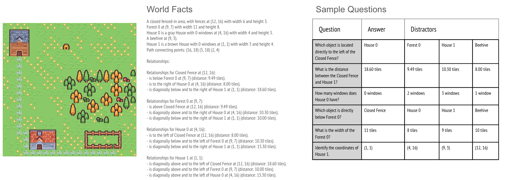
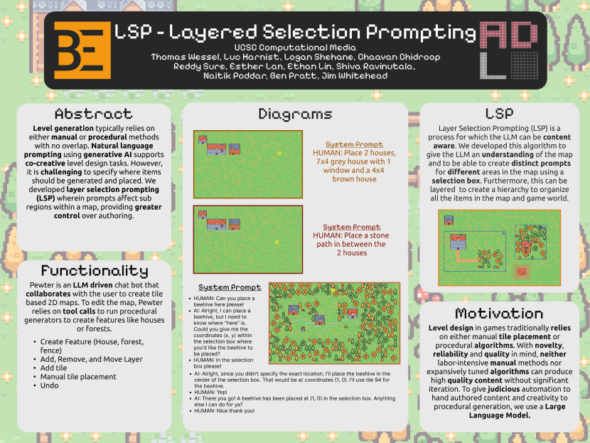

Logan Shehane
UCSC Computational Media Application Portfolio
Selected works highlighting my contributions to Generative Methods, Tool Design, and Technical Systems.
Technical & Research Work
-

Conversational Interactions with Procedural Generators
A research paper exploring frameworks for LLM-based procedural content generation.
My Contribution: Assisted in writing tool calling code, conducting LLM evaluation, created datasets, and contributed to the writing and editing of the paper. -

CMPM 118 Co-Creative Map Maker
This was a prototype that helped in the Conversation Interactions with Procedural Generators paper, that I wrote.
My Contribution: Developed the functionality of the application and implemented the tool calling architecture, I recieved help with constrain solving. -

Layered Selection Prompting
A framework designed to improve the reliability and specificity of LLM outputs through structured selection mechanisms.
My Contribution: Helped lay the framework for the project, assisted with design choices, and worked on improving the usability of the tool.